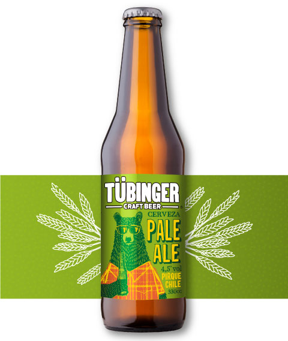

pale ale
pale ale
Nuestra International Pale Ale es una cerveza color dorado con espuma blanca moderadamente abundante. En aroma se aprecia el lúpulo levemente especiado y frutal, con notas de moderada intensidad y con reminiscencias a maracuyá que juegan con los aromas dulces de la malta. En boca, se aprecia el dulzor de ésta última con un amargor suave de cierre.